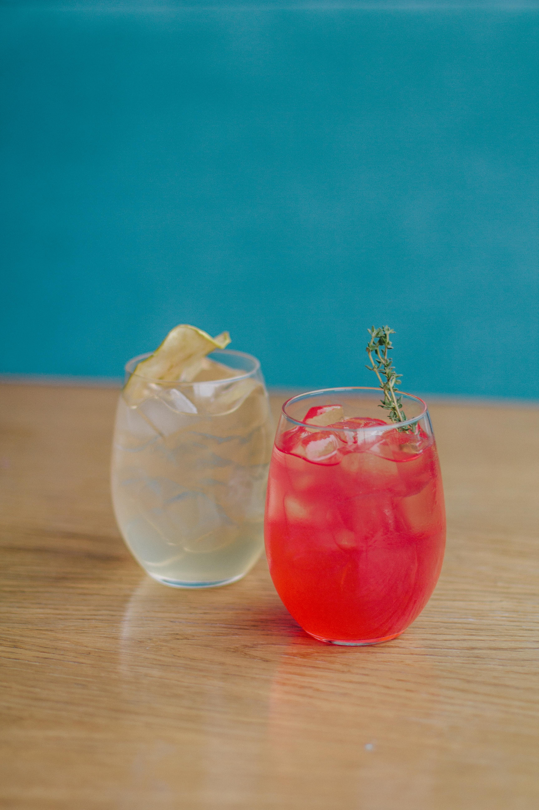

Welcome SK's hometending
홈텐딩의 정의 : '홈+ 바텐딩'으로 집에서 하는 바텐딩을 말한다.
나는 술을 너무 좋아하다보니 집에서 칵테일을 만들어 먹으려고 시작했다.
술 취향 : 피즈 선호
restore cocktail recipe

리니비니 유튜브 구독리니비니 유튜브 구독
- 데메테르 (demeter)*****
- 차이나 블루 (china blue)*****
- 진 토닉 (gin tonic)****
- 진 피즈 (gin fizz)****
- 슬로 진 피즈 (sloe gin fizz)****
- 진 & 바질(퍼릴라) 스매쉬 (gin & basil(perilla) smash)***
- 슬로 테킬라 (sloe tequila)****
- 롱아일랜드 아이스티 (long island iced tea)****
- 롱비치 아이스티 (long beach iced tea)****
- 도쿄 아이스티 (tokyo iced tea)**
- 텍사스 티 (texas tea)****
- AMF****
- 브램블 (bramble)
- 에비에이션 (aviation)
- 클로버 클럽 (clover club)
- 라즈베리 진 피즈 (raspberry gin fizz)****
- 진 그린티 (gin green tea)****
- 코스모폴리탄 (cosmopolitan)
- 스크루 드라이버 (screw driver)
- 섹스 온 더 비치 (sex on the beach)
- 드라이 마티니 (dry martini)
- 키스 오브 파이어 (kiss of fire)
- 솔티 도그 (salty dog)
- 오이 진 토닉 (cucumber gin tonic)****
- 마이타이 (mai-tai)
- 모히토 (mojito)*
- 오이 모히토 (cucumber mojito)****
- 블루 하와이 (blue hawaii)***
- 쿠바 리브레 (cuba libre)**
- 카이피라냐 (caipirinha)
- 마가리타, 블루 마가리타 (margarita, blue margarita)***
- 테킬라 선라이즈 (tequila sunrise)**
- 마타도르 (matador)*
- 피치 크러쉬 (peach crush)
- 미도리 사워 (midori sour)
- 준 벅 (june bug)
- 네그로니 (negroni)
- 그라스호퍼 (grasshopper)
- 카시스 프라페 (cassis frappe)
- 스푸모니 (spumoni)
- coding
-
financial
-
hometending
-
excercising
-
consumption
- food tour
- cafe tour
- bar hopping